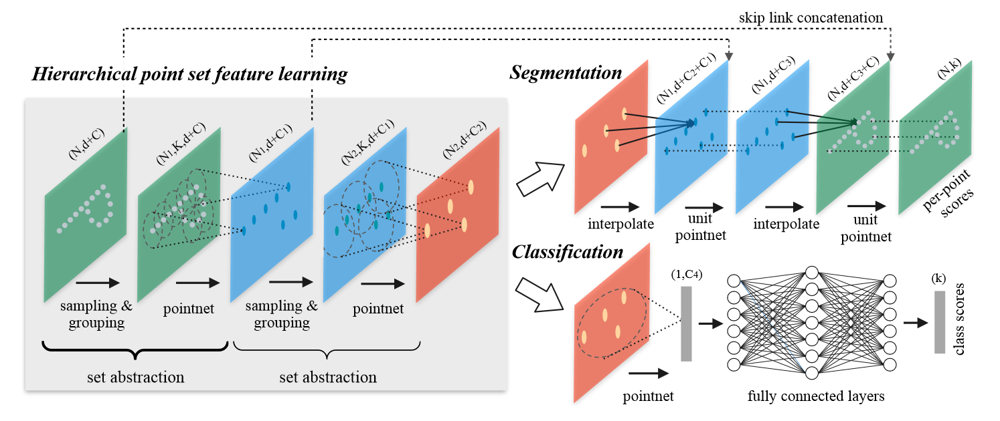
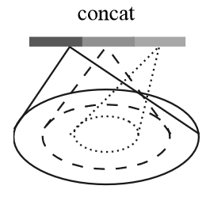
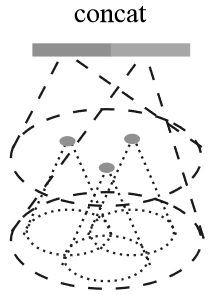

论文：PointNet++: Deep Hierarchical Feature Learning on Point Sets in a Metric Space
一、摘要及引言
PointNet 是直接处理点集的开创性工作，其基本思想是学习每个点的空间编码，然后将所有单个点特征聚合为全局点云特征。但 PointNet 只对单个点编码，无法捕获局部特征。因此引入了分层神经网络 PointNet++ ，通过以分层方式处理点集的方法来获取不同尺度下的点集特征。
二、问题陈述
假设 $\mathcal{X} = (M, d)$ 是一个离散度量空间，其度量继承自欧氏空间 $\mathbb{R}^n$，其中 $M \subseteq \mathbb{R}^n$ 是点集，$d$ 是距离度量。此外，环境欧氏空间中 $M$ 的密度可能并非处处一致。我们感兴趣的是学习将 $\mathcal{X}$ 作为输入（连同每个点的附加特征）的集合函数 $f$ 并产生语义兴趣重新分级 $\mathcal{X}$ 的信息。和 PointNet 一样，这样的 $f$ 可以是将标签分配给 $\mathcal{X}$ 的分类函数，也可以是将标签分配给 $M$ 的每个成员的分割函数。
三、方法
PointNet 回顾
对于无序点集 $\{x_1,\dots,x_n\}$ ，定义集合函数 $f:\mathcal{X}\rightarrow\mathbb{R}$ 将点集映射为向量：
其中 $\gamma$ 和 $h$ 通常为多层感知器。PointNet 论文中已经证明 $f$ 可以逼近任何一个连续集合函数，且对输入点排列不变。但 PointNet 缺乏捕捉到不同尺度的本地特征的能力。
分层点集特征学习
PointNet++ 的层次结构由许多 SA 层（Set Abstraction Levels）组成。SA 层由三个关键层组成：采样（Sampling）层、组合（Grouping）层和 PointNet 层。
抽象层次的输入矩阵大小为 $N\times(d+C)$ ，表示 $N$ 个具有 $d$ 维坐标和 $C$ 维点特征的点；输出矩阵大小为 $N’\times(d+C’)$ ，表示 $N’$ 个具有 $d$ 维坐标和 $C’$ 维点特征（以总结局部上下文）的子采样点。

采样层
给定输入点 $\{x_1,x_2,\dots,x_n\}$ ，利用迭代最远点采样（FPS）来选择点的子集 $\{x_{i_1},x_{i_2},\dots,x_{i_m}\}$ ，使得 $x_{i_j}$ 是剩余点中距离点集 $\{x_{i_1},\dots,x_{i_{j-1}}\}$ 最远的点。论文原话虽然凝练但是略微抽象，这里详细阐述一下 FPS 算法的步骤：
- 选定第 $i$ 个点为初始点，记作 $x_{i_1}$ ，此时候选集为 $x_{i_1}$ ；
- 定义点 $x_k$ 到点集 $X$ 的距离为 $\min(\left|x_k-x \right|_2)(x\in X)$ ，即到点集中所有点距离的最小值；
- 找到剩余点中距离候选集最远的点，纳入到候选集中；
- 重复步骤 3，直到点数达到设定值。
其中距离的定义一般采用欧式距离，也可以采用测地线距离；初始点随机选择，也可以选择距离点云重心的最远点，使得结果没有随机性。FPS 算法和泊松盘采样很类似，但泊松盘采样提供了更多的随机性，并且对点与点之间的距离要求更宽松。另外，FPS 算法不需要任何参数，应该是更方便可靠的。
采样层得到了 $N’$ 个采样点，这些点将被用来构成局部特征。
组合层
组合层的输入为 $N\times(d+C)$ 的点集和 $N’\times d$ 的采样点集合。对于每个采样点，收集其一定半径范围内最近的 $K$ 个点（$K$ 是因采样点而异的），这个操作称为 ball query 。与 KNN 相比，ball query 保证了固定的区域尺度。
每个采样点会生成一个 $K\times(d+C)$ 的矩阵，因此最后组合得到 $N’\times K\times(d+C)$ 的矩阵。这个矩阵聚合了一系列的局部点集，如果类比到二维图像，则与 CNN 中的感受野类似，只不过 CNN 中只需要简单地滑动卷积核，而点云中稍微麻烦一些。类似地，PointNet++通过多个 SA 层，逐步扩大感受野，从而提取更高层的特征。
PointNet 层
该层的输入为 $N’$ 个局部区域，每个 $K\times(d+C)$ 的局部区域将被聚合为一个 $(d+C’)$ 的局部特征向量，组合得到 $N’\times(d+C’)$ 的矩阵。
具体地，首先将局部区域所有点中心化，即 ：
然后将相对坐标和点特征一起使用，从而捕获局部区域特征，并且消除平移对局部特征的影响。中心化也可以类比到卷积运算中的卷积核中心，因为卷积操作同样不关心每个点在图像中的绝对位置。
非均匀采样密度下的鲁棒特征学习
如前所述，点集在不同区域的密度不均匀是很常见的。这种不均匀性给点集特征学习带来了重大挑战。在密集数据中学习到的特征可能无法推广到稀疏采样区域。同时，为稀疏点云训练的模型可能无法识别细粒度的局部结构。
理想情况下，我们希望尽可能捕获密集采样区域中的细节，但这在稀疏区域无法做到，因为局部特征可能会因采样不足而失效。在这种情况下，我们应该在附近寻找更大尺度的特征。为了实现这一目标，我们提出了密度自适应 PointNet 层（右图)，当输入采样密度发生变化时，它可以学习组合来自不同尺度区域的特征。我们将具有密度自适应 PointNet 层的分层网络称为 PointNet++。
对比 分层点集特征学习 章节所描述的 SA 层，PointNet++中每个 SA 层将提取多个尺度的局部特征，并根据点密度将它们组合，论文提出了两种类型的密度自适应层：MSG 和 MRG 。
多尺度组合（Multi-scale Grouping，MSG）
如右图所示，在每个采样点上，用 PointNet 提取不同尺度的特征并将其组合形成多尺度特征。同时为了给网络提供不同密度的输入，采用 random input dropout 方法，随机选取 dropout 概率 $\theta\in\left[0,p\right] (p\le 1)$ ，以概率 $\theta$ 丢弃部分输入点，从而提供了稀疏性和不均匀性（随机性)。
多分辨率组合（Multi-resolution Grouping，MRG）
考虑到 MSG 方法计算代价较大，提出一种替代方法：MRG，如图（右)所示。对于每个局部区域的特征 $L_i$ ，都由两个特征组成：左边特征通过 SA 层得到，右边特征则通过对区域内所有点云利用 PointNet 获取特征（相当于在 SA 层中嵌套了一个 SA 层？）。
当局部区域密度较低时，第一个向量往往不如第二个可靠，这时可以提高第二个向量的权重。相反地，局部区域密度较高时，第一个向量提供了更精细的细节特征。
用于点分割的特征传递
SA 层对原始点集进行了下采样，然而在分割任务重我们希望获得所有原始点的点特征（即输入输出矩阵的行数应相等）。一种办法是在每个 SA 层中将所有点都采样为中心点（即去掉了 Sampling 层），但这样会导致计算代价非常大。因此论文给出了另一种方法：特征传播（FP）层（Feature Propagation level）。设 $N_l , N_{l-1}$ 是第 $l$ 个 SA 层输出和输入的点集大小（$N_l\le N_{l-1}$），FP 层通过在 $N_{l-1}$ 个点的坐标处插入 $N_l$ 个点的特征值 $f$ 来实现上采样。具体的插值方法，论文选择了基于 kNN 的反距离加权平均：
然后将插值得到的特征和来自 SA 层的 $N_{l-1}$ 个特征连接（skip link）起来，并传递给 unit pointnet 。unit pointnet 论文中没有更多介绍，只说是类似于 $1\times 1$ 卷积核。由此来看，unit pointnet 应该就是没有池化操作的 pointnet ，因此只是重组了每个点的特征向量，并不会改变点的个数。
重复通过与 SA 层个数相同的 FP 层，即可将输出矩阵行数恢复为 $N$ ，并且特征长度重组为 $k$ ，即类别个数，从而达到分割的目的。
四、总结
针对 pointnet 难以获取局部特征的缺陷，pointnet++ 主要做了以下改进：
- 采用多个 SA 层逐步获取多层次的特征信息。其中采样层利用 FPS 算法生成采样点；组合层利用 ball query 算法构成局部区域；pointnet 层提取局部区域特征；
- 采用多个 FP 层进行特征上采样，融合高层特征和底层特征，实现分割任务。利用了反距离加权插值来上采样特征值，利用了 unit pointnet 来提取特征；
- 提出了 MSG 和 MRG 两种方法来应对非均匀采样问题，主要原理是在 SA 层中为采样点生成多尺度的局部信息，并通过 dropout 方法来提供稀疏性和不均匀性。